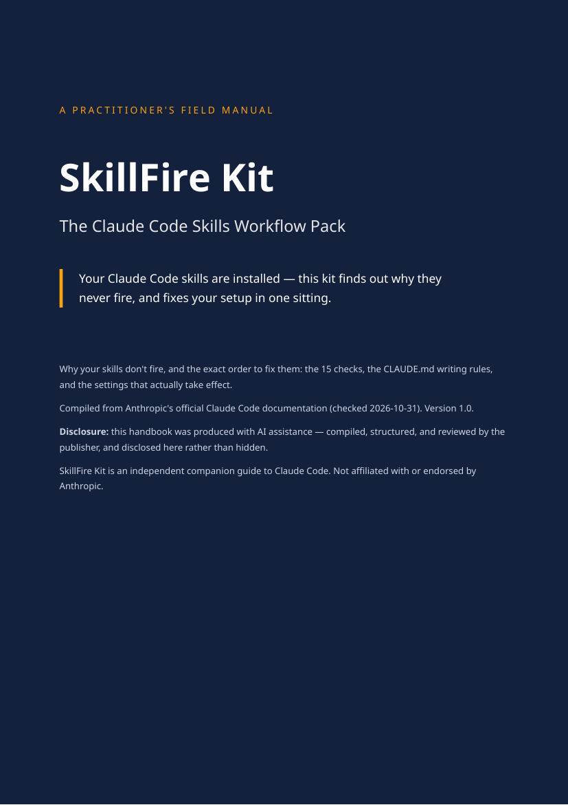
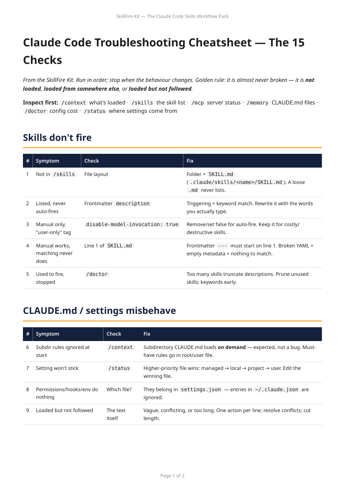

SkillFire Kit — The Claude Code Skills Workflow Pack
Your Claude Code skills are installed — this kit finds out why they never fire, and fixes your setup in one sitting.
$9 one-time payment
Buy SkillFire KitSecure checkout by Creem — taxes are handled by Creem at checkout. Instant download after purchase. Prefer the full store listing? View this product on Creem.

Sound familiar?
- You installed skills everyone recommended. Claude acts like they don't exist.
- Your CLAUDE.md is loaded — you checked — and half of it is ignored anyway.
- The MCP server says "connected". It has zero tools.
- You changed a setting an hour ago. Nothing changed. You don't know which file is even being read.
- Every blog post says something different — and half of them are telling you to create a
.claudeignorefile that current Claude Code doesn't even read.
What you get
- The Handbook (PDF) — six short chapters: how triggering actually works, install & layout rules, the 15 checks, how to write a CLAUDE.md that gets followed, blocking directories with Read deny rules (the method that works), and reading token usage with
/usage. - The 15-Check Cheatsheet — the whole diagnostic sequence on one page, in the order to run it.
- CLAUDE.md template — a complete, working example file with the writing rules built in, ready to adapt to your project.
- settings.json template — working permission rules, including Read deny rules that keep Claude out of your
.envandsecrets/. - An example SKILL.md — a structurally correct, real skill (changelog-writer) to copy the shape from.
- Free v1.x updates — when Claude Code changes a command or menu, the checklist gets updated and you get the new version.

├─ README-first.txt
├─ SkillFire-Kit-Handbook.pdf
├─ troubleshooting-cheatsheet.pdf
└─ files/
├─ CLAUDE-template.md
├─ settings-template.json
├─ troubleshooting-cheatsheet.md
└─ example-skill/SKILL.md
The 15 checks — what the cheatsheet walks you through
Who this is for
- You use Claude Code most days and have at least one skill installed.
- You've said "why won't it just use the skill" out loud at least once.
- You'd rather run a 15-step checklist once than forum-hop for a week.
Who this is not for
- Complete beginners — if you haven't installed Claude Code yet, the free docs will serve you better right now.
- Users of other coding agents — this is Claude Code configuration, specifically.
- Anyone looking for a prompt library — there are no prompts in this kit. It's a workflow and a set of working files.
FAQ
Is this just the official documentation?
The facts come from Anthropic's official documentation — that's the point; it's the version you can trust. What you're paying for is the work around it: the checks selected and ordered the way a practitioner runs them, the explanations in plain language, and the ready-to-use files. If you have a free weekend, you can absolutely assemble the raw material yourself.
Did you test all of this?
Every check traces to the official documentation (sources are listed in the handbook; documentation checked 2026-10-31). We're not claiming lab benchmarks or personal test results — we're claiming a faithful, well-organised compilation, and the handbook says so on page one.
Will this make my skills fire?
It will show you which of the documented causes is yours and what the documented fix is. That's a diagnosis promise, not a magic promise: if your issue is outside your configuration entirely (the handbook's safe-mode check tells you exactly that), no configuration guide can fix it — and this one will at least stop you wasting time editing files.
What if Claude Code changes and the kit goes stale?
Commands and menus do change between versions. Your purchase includes free updates to this kit's checklist for the whole v1.x line.
How is it delivered, and in what formats?
Instant download after checkout: one zip with 7 files — the handbook and cheatsheet as PDFs, and the templates as plain Markdown and JSON you copy into your project. No installer, no account, and the reading files work offline.
How do I get the free v1.x updates?
Re-download the kit from your purchase library on Creem — when the checklist is updated for a Claude Code change, the new files replace the old ones there at no extra charge.
What's your refund policy?
This is a digital product delivered in full at purchase. Refunds follow the selling platform's policy for delivered digital goods; we don't promise unconditional refunds. That said, if the files arrive broken or incomplete, contact us and we will fix the delivery or refund you — a defective download is on us, always.
Was AI used to make this?
Yes. This product was produced with AI assistance and human editorial review, and it's disclosed here and in the handbook rather than hidden — the same standard we'd want from anyone selling to practitioners.
$9 one-time payment
Buy SkillFire KitSecure checkout by Creem — taxes are handled by Creem at checkout. Questions first? Email djh973832@gmail.com.